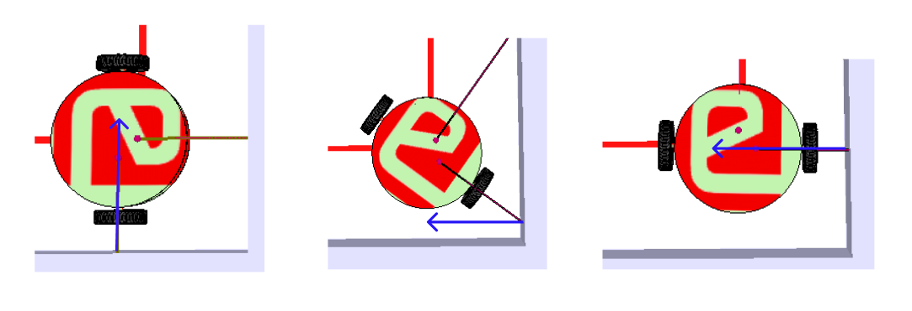

for making the bot move by alligning it parallel to the side walls you can use the fact that at parallel to the wall the ray vector will be normal to the surface. one of the components of ray vector as returned by coppeliasim proximity sensor will have value 0 if ray vector is normal to the surface and bot is perfectly alligned. if it is not perfectly 0 you can use it correct your orientation. best way to use it in a feedback loop:
left_motor_speed = f(ray_vector)
you have to determine f and g so that the bot can correct its orientation while also moving forward
right_motor_speed = g(ray_vector)
you need to stop the bot at a certain distance before the front walls. but it is not possible to just suddenly stop it, it may stop after travelling some more distance. why not try to reduce its speed slowly as soon as it detects wall. try to reduce speed slowy based on its distance from the wall and then finally zero
finally rotate the bot after stopping it. again you can use ray vector to correct its new orientation